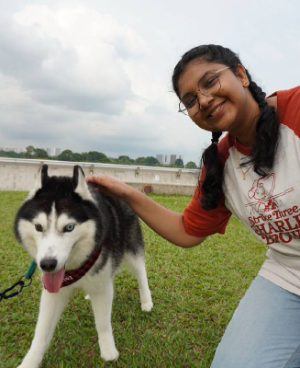

Final-Year Diploma Student | Infocomm Security Management
Email: sa.roshini06@gmail.com

I am a final-year Diploma student in Infocomm Security Management at Republic Polytechnic, with hands-on experience in system configuration, network monitoring, and IT project implementation. I am passionate about applying IT principles to solve real-world problems and strengthening digital security systems.
Through academic projects and internship experiences, I have developed strong analytical thinking, adaptability, and teamwork skills. I aim to continue growing in the IT industry while contributing meaningfully to technology-driven environments.
Currently pursuing a Diploma in Infocomm Security Management, where I develop practical skills in cybersecurity, network analysis, system configuration, and IT infrastructure. Through hands-on lab projects and real-world simulations, I have strengthened my problem-solving abilities and technical competency. (Expected Graduation: May 2026)
Completed GCE ‘O’ Levels while actively developing teamwork, communication, and discipline through school involvement. This foundation shaped my adaptability and prepared me for further studies in the IT field.